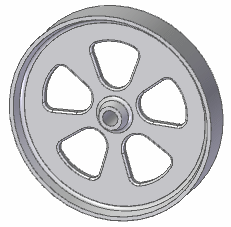
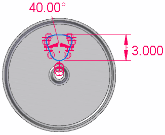
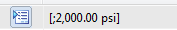
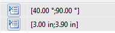
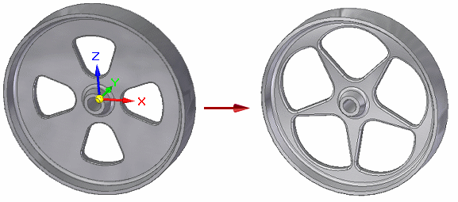
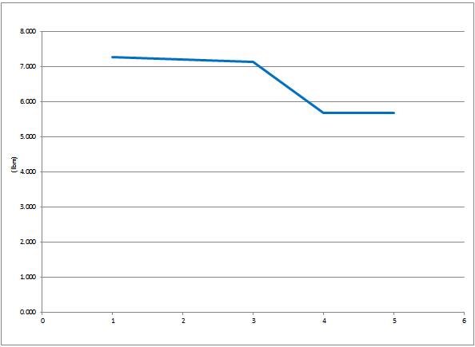
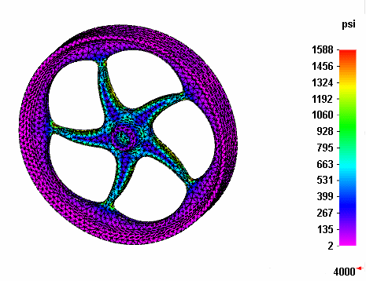

Minimize the mass of a part with design optimization
You can refine the results of a structural or heat transfer study using use the New Optimization command in Solid Edge Simulation. Design optimization changes the study geometry based on simulation variables, such as loads, stress, deformation, strain, and natural frequency.
You want to minimize the mass of a part to reduce its cost, yet ensure that Von Mises Stress falls within the Factor of Safety (FOS) design limit. To achieve that objective, you want to change the dimensions of the cutouts to reduce the surface area (and therefore the mass) of the part.

For this optimization scenario, you can define the design objective, design limits, and design variables as follows in the Optimization dialog box:
-
Design objective=Reduce the mass by at least 1 lbm. The current value is 7.632 lbm.
-
Design limit=Von Mises Stress<Yield Stress/Factor of Safety (where Yield Stress=4000 psi, FOS=2).
-
Design variables=Height and Angle of the cutout, as defined in the Variable Table. The current dimension values are shown in the following illustration:

-
Choose Simulation tab→Study group→New Optimization .
This creates the Optimization collector in the Simulation pane and displays the Optimization dialog box.
Note:A simulation study must be solved before you can optimize it using simulation result variables. If the study has been meshed but not solved, you still can optimize it using only the load variables.
-
Define the design objective.
-
On the Design Objective (Optimization dialog box) page, click Define Objective.
-
In the Define Objective dialog box, select the variable you want to use as the design objective, and click OK to close the dialog box.
Example:Expand the Physical Properties list and select Mass.
-
On the Design Objective page, from the Objective Type list, select Minimize.
The current value for mass is displayed.
-
Click the Next button, or click Design Limits in the left pane.
-
-
Define the design limits.
-
On the Design Limits (Optimization dialog box) page, click Add Limit.
-
In the Add Design Limit dialog box, expand the Physical Properties or Simulation Study Results list until you can select the variable you want to use as a design limit. Click OK to close the dialog box.
Example:Expand the Simulation Study Results list and select Von Mises Stress.
The current value for the selected property or result variable is displayed on the Design Limits page.
-
On the Design Limits page, click Rule .
-
In the Design Limit Rule Editor, use the Minimum limit list, the Maximum limit list, and the Value boxes to define the acceptable range for the selected design limit variable. Click OK to close the dialog box.
The limit parameters are displayed in the Limit Value column on the Design Limits page. If you specified a minimum and a maximum limit, two values are displayed, separated by a semicolon.
Example:To limit Von Mises Stress<4000 psi/2, do the following:
-
From the Maximum limit list, select Less than or equal to.
-
In the Value box, type 2000.
When you enter a maximum value but not a minimum value, the entry in the Limit Value column looks like this:

-
-
Click the Next button, or click Design Variables in the left pane.
-
-
Define the design variables.
Define the design variables using the limits defined in the Variable Table, or by defining a subset of those limits using the Design Variable Rule Editor.
-
On the Design Variables (Optimization dialog box) page, click Add Model Variable.
-
In the Variable Table, select the rows with the corresponding variables that you want to allow to change, and then click Add.
Example:Select the Angle dimension variable, press the Shift key, and then select the Height dimension variable.
The selected variables and their current values are displayed on the Design Variables page.
-
On the Design Variables page, for each design variable, select the variable name, and then click Rule . In the Design Variable Rule Editor, define the acceptable range for the selected design variable.
The minimum and maximum values that you specify for each variable are displayed in the Range column on the Design Variables page, separated by a semicolon.
Example:Allow the Angle variable to change so that it is greater than 40 degrees and less than 90 degrees. Also allow the Height variable to change so that it is greater than or equal to 3 inches and less than or equal to 3.9 inches.
The resulting entries in the Range column on the Design Variable page look like this:

-
-
The design optimization scenario now is fully defined. In the Optimization dialog box, click the Optimize... button to begin processing.
When optimization finds a solution, the model is updated using the new variable values.

-
In the convergence status dialog box, click the following buttons to view the graphical and numerical results of the optimization:
-
View Summary—Displays an Excel spreadsheet showing the values of each iteration. It there are any values shown in red text, this indicates they exceeded the design limit.
Click the Graph tab at the bottom of the worksheet to see the convergence graph mapping the objective across each iteration.
Example:The design objective of reducing the mass by at least 1 lbm was achieved.

-
View Plots—Displays the result plot corresponding to the last optimization iteration.
Example:The Von Mises Stress result plot shows that the design limit of Von Mises Stress<2000 psi was maintained.

Tip:-
The values of the variables that have changed can be reset to their initial state by selecting the Reset Geometry command from the shortcut menu of the Optimizations collector→Optimization 1 node in the Simulation pane.
-
You can change one or more parameters in the Optimization dialog box by selecting the Edit Optimization command from the shortcut menu of the Optimization 1 node in the Simulation pane.
-
The Control Parameters (Optimization dialog box) limits the number of optimization processing iterations. You can adjust these options based on the size and complexity of your model.
Example:You may want to increase the default value for Maximum number of iterations based on the status message displayed in the convergence status dialog box.
-
The Convergence Parameters (Optimization dialog box) determines when another processing iteration is required. If the calculated values of an iteration are within this margin compared to the previous iteration, then the optimization is finished.
-
For more information about these and other optimization commands, see Displaying and modifying the optimization results.
-
Learn more
Optimizing study resultsDisplaying and modifying the optimization results
Best practices for design optimization
Defining design optimization parameters
How overriding properties affects design optimization
Look up more details
Design Objective (Optimization dialog box)Design Limits (Optimization dialog box)
Design Variables (Optimization dialog box)
Control Parameters (Optimization dialog box)
Convergence Parameters (Optimization dialog box)
Design Limit/Design Variable Rule Editor
Convergence status dialog box